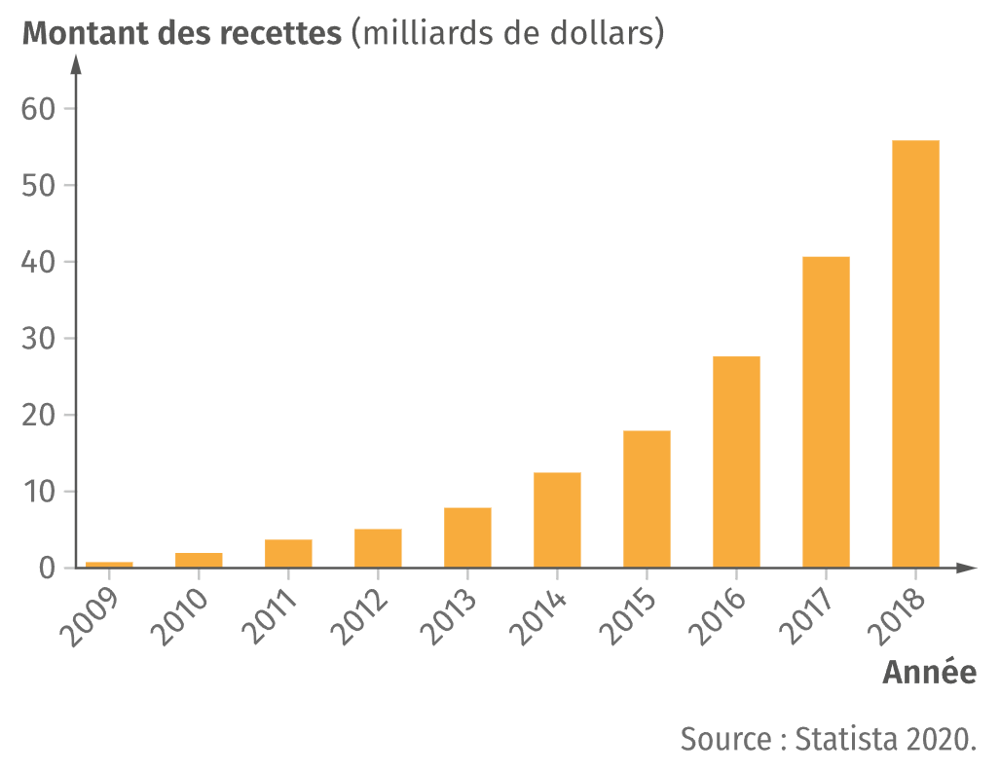

Facebook, Instagram, TikTok, Snapchat, Youtube, etc... Il existe de nombreux réseaux sociaux ayant chacun leur spécificités.
Quelles sont les principales différences entre les réseaux sociaux ? D'où proviennent leurs revenus ?
1 - Principales fonctionnalités des réseaux
| Réseau social | Principe | Fonctionnalités principales |
|---|---|---|

|
Rester en contact et échanger avec son entourage |
|
|
Youtube |
Poster et regarder des vidéos |
|

|
Partager des photos et des vidéos |
|
|
|
Dialoguer et échanger des photos et des vidéos instantanément |
|

Snapchat |
Regarder des photos et des vidéos de manière éphémère |
|

|
Envoyer des messages courts pour commenter l'actualité ou échanger avec des internautes |
|
2 - Nombre d'utilisateurs des réseaux sociaux en France et dans le monde

3 - Revenus de l'entreprise Facebook
4 - Sources des revenus des réseaux sociaux
Les modèles économiques des réseaux sociaux ne sont pas tous équivalents. Si l’inscription est gratuite en général, certains réseaux sociaux proposent des contenus ou des fonctionnalités supplémentaires aux internautes qui paient les services d’un compte premium. Dans ce cas-là, la source de revenus est clairement identifiée.
D’autres, comme Facebook, utilisent la publicité ciblée qui se sert des données collectées sur les utilisateurs de leur plateforme pour générer des profits. Pour cela, les entreprises qui souhaitent diffuser leurs annonces achètent aux réseaux sociaux un espace pour afficher leurs publicités, en précisant le profil d’utilisateurs souhaité. Sur ces critères, les algorithmes des réseaux sociaux diffusent les publicités aux internautes ciblés.